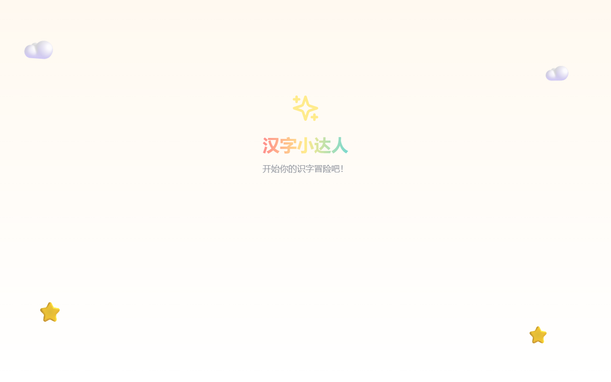

Software · 教育软件
教育软件
限时免费中我们为自己在东京国际学校就读的孩子开发的教育软件，现在也开放给更多家庭使用。

Available · 数学已上线
MAP 测试+练习
针对国际学校入学 MAP 测试，我们研发出一套面向12个年级、数学（Math）、英语（Language Usage）、阅读（Reading）、科学（Science）四个学科的"模拟测试 + 练习"一体化软件：通过自适应测试了解孩子的真实水平，系统根据作答表现动态调整评测与练习的题目难度，并在测试与练习全程中持续自适应，并结合技能诊断推荐专项练习，帮助孩子在两次学校测试之间持续巩固和提升各项能力。
- 数学已经上线，支持G1~G12；
- 自适应测评：动态匹配题目难度，共30000题的题库匹配各种难度需求；
- 专项练习：按测试中薄弱的技能点进行练习，配英文讲解与错题复习，1~3年级提供朗读支持；
- 水平诊断报告：英日中三语讲解孩子的评测结果、逐题分析及下一步练习建议；
英语（Language Usage）、阅读（Reading）、科学（Science）即将陆续上线。
开始练习 →
Why We Build
为什么我们做教育软件？
“
我们的孩子在上海德威国际学校就读时，学校重视中文教育，同学们虽然拿着各国护照，大多母语还是中文。刚到东京，进入清泉国际学校时，纯正的国际氛围使得孩子课上课下都得说英语，有一个适应环境的过程。
因此闲暇时，我们为孩子做了几款练习用的软件——中文读写、数学计算、日语入门、MAP 练习，后来意外受到同学家长们的喜爱，于是我们投入了更多精力不断迭代，现也开放给大家。
如果您试用后觉得有其价值，我们会收取很低的费用，用于服务器与数据库的日常运维，让软件持续稳定地为大家服务。
Betty & Jerry
FOUNDERS · KISSHO